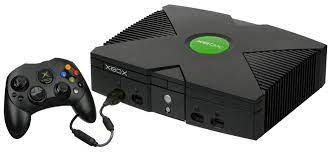
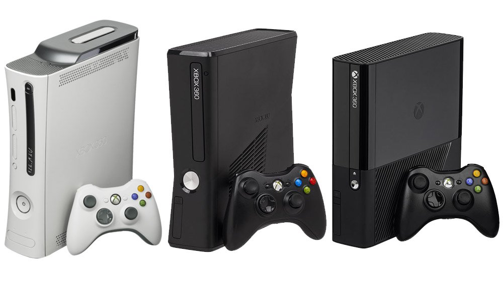
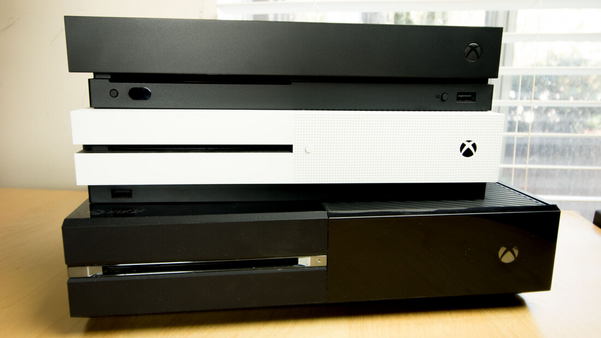
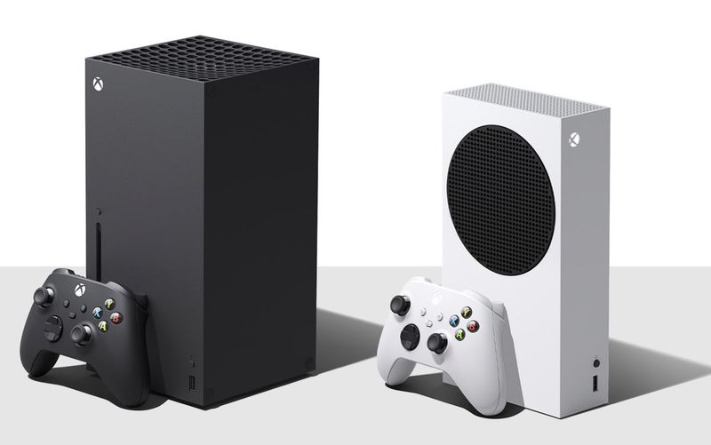

El Universo Gaming

Xbox fue la primera consola de la compañía Microsoft, esta la fabricó en colaboración con Intel. Esta consola es de la sexta generación lanzada en el 2001,fue la competencia de la PlayStation.
Xbox 360 fue la segunda consola fabricada por Microsoft, esta consola fue parte de la séptima generación lanzada en el 2005 compitiendo en ese entonces con el PlayStation 3.
Xbox 360 tuvo diferentes versiones llamadas:
Xbox One fue la tercera consola lanzada por Microsoft en el 2013, y es parte de la octava generación de consolas. Esta consola dio un gran salto en tecnología en cuanto almacenamiento podía soporta hasta 2TB, e incluso más con disco duro externo. También podía llegar a una calidad de imagen 1080p e incluso 4k. 
Xbox One también tuvo diferentes versiones:
Son la cuarta consola lanzada por Microsoft en el 2020 y es parte de la novena generación de consolas. Estas consolas son de lo mejor que hay ahora mismo con soporte hasta 8K HDR y pueden llegar hasta 120 FPS. La Xbox series x y Serie S tienen su diferencia por ejemplo la serie X es más grande y tiene más potencia, pero más cara, la Serie S es solo juegos Online y más barata, pero con menos potencia.
